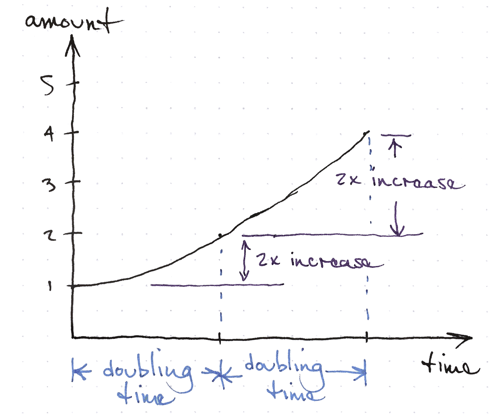
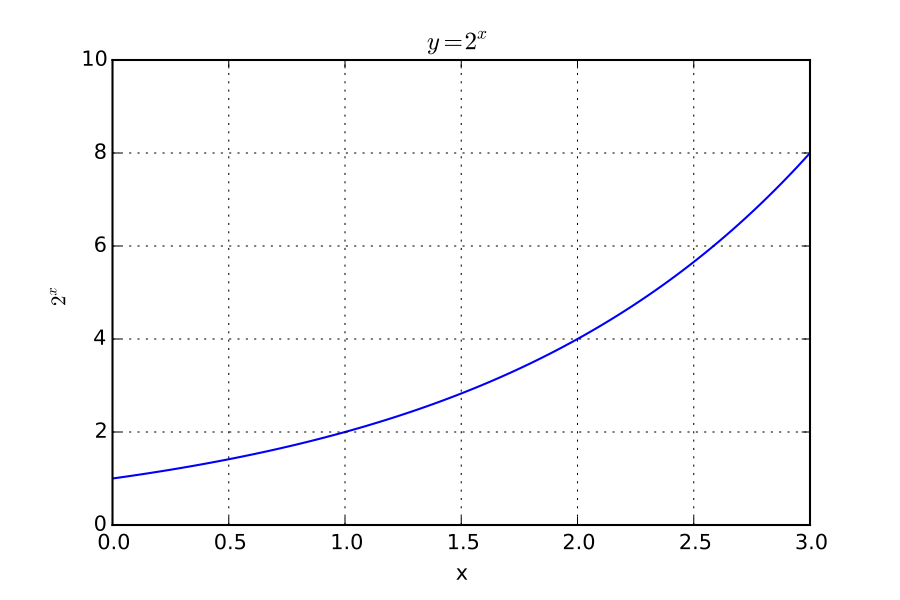
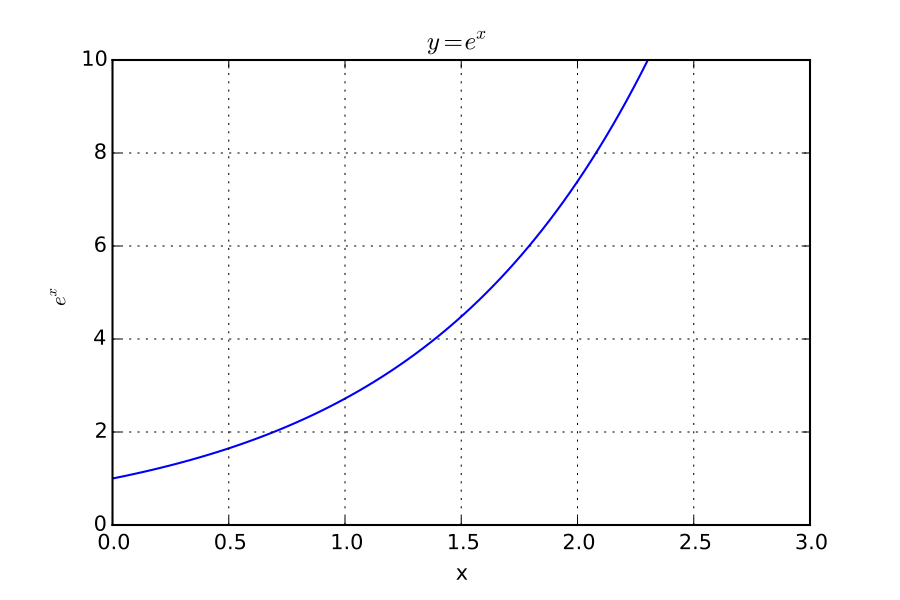
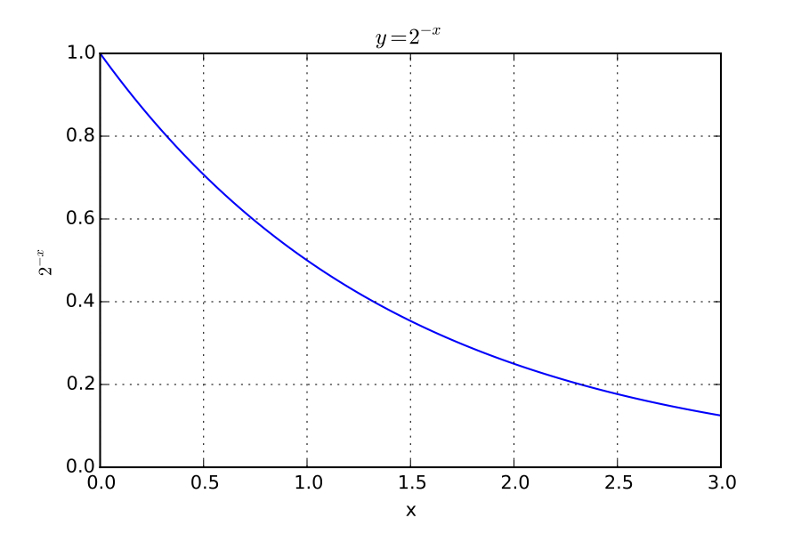
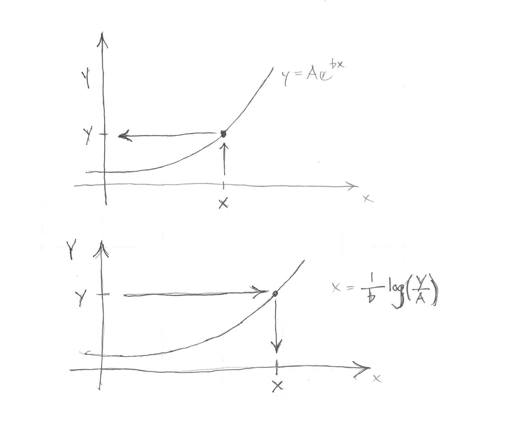

Exponential
The word exponential makes this concept sound unnecessarily difficult.
If a function is exponential, the y-values of any points on the line that are the same distance apart on the x-axis will have the same ratio. This is similar to linear functions where the y-values of any points on the line that are the same distance apart on the x-axis have the same difference when subtracted.
Exponential models arise when the change in a quantity is proportional to the amount of the quantity. That is, the slope of an exponential function at any point is equal to the value of the function at any point multiplied by a number.
Doubling Time
Exponential growth means that if you measure how long it takes a quantity to double, the time to double from any current amount will be the same.
There is nothing special about the doubling time, it is just a convenient ratio of 2:1. Keep in mind that the ratio between the two points is the same for any two equal time intervals.

Doubling

Exponential growth
Exponential models fit this things well:
- Populations
- Contagious disease spread
- Credit card balances
- Viral videos
Place Value
Recall from place value, that if we were using a base 2 system, each of these multiplications would be the same as shifting numbers one place to the left.
Doubling Time
A property of an exponential function, is that in a given interval of time, the value increases by a fixed ratio.
So, if the function doubles over a time, let’s call it t, if we wait for a time t at any time, the value of the function doubles.
Slope proportional to function value
The exponential is defined as a function whose slope is proportional to its value.
The function that is exactly equal to its slope is y = e^x.
Exponential notation
You’ve probably seen notation like x^2 or x^3 several times before. In exponential notation, our symbol for a variable, x is in the exponent.
For example 2^x or 3^x.
Recall that 1 = 2^0, 2 = 2^1, 2 \cdot 2 = 2^2 = 4, etc. So, 2^x means to multiply 2 by itself x times.
Examples
Concepts
- Euler’s Number
- Exponential notation
- Place value
- Slope proportional to the value
- Doubling time
Euler’s number
The following things are true about Euler’s number (e)
e = 2.71828...
e = (1 + \frac{1}{x})^x as x goes to infinity.
e = 1 + x + \frac{x^2}{2!} + \frac{x^3}{3!} + ...
Folding paper
- Zero folds 2^0 makes one sheet thick
- One fold 2^1 is two sheets thick
- How many times can you fold?
- How can we express the number of pages by the number of folds?
- Can we write out the pattern?
\textrm{pages} = 2^{\textrm{folds}}
Rabbits
- start with two
- wait one year
- now we have double (4)
- wait another year
- now we have eight (8)
- how many in 5 years?
The number of rabbits at the start of the generation (starting with generation zero) is \textrm{rabbits} = 2^{\textrm{generations+1}}
Money grows the same way
- Start with $1000
- Grow by 10%
- Now $1100
- Grow by 10%
- Now $1210
1000 \cdot (1+0.10)^{years}
Exponential growth
- The rate of change is proportional to the total number
- The doubling time is constant over the entire range
- What things exhibit these characteristics?
Definitions
Which gets bigger faster?
x^2 or 2^x
Draw these out in your notebook to see
Exponential growth

Exponential Decay
What if instead of doubling every year, something fell by half each year?
Halving

Exponential Decay

Exponential decay
- A quantity loses the same fraction of itself for a given time interval
- Nuclear waste
- Toxins in a body
- The water in a stream (baseflow)
Logarithm
If you plot something on a log axis, you will notice that the distance between any two numbers with the same ratio is the equal. This preservation of the size of a ratio is the key feature of logarithms and exponentials.
Inverse functions
- Recall that the square root and the cube root were the inverse of the squared function and the cube function
Logarithm
- The inverse of exponentiation is the logarithm
- Properties of e
- You have to specify your base on a computer (2, e, 10)
Logarithm
The logarithm in base 10 basically asks, if you are in base 10, how many digits?
Logarithmic scales
- Musical pitch
- Richter scale
- Vision
- Sound
In each of these, we perceive or use the logarithm.
Logarthmic Scale
Along this scale, a distance corresponds to a multiplication.

This rule is a consequence of logarithms
10^a \cdot 10^b = 10^{a+b}
Take log of both sides
a \cdot \log 10 + b \cdot \log 10 = (a+b) \cdot \log 10
Solving Problems
Analytical Approach
Use the logarithm as an inverse function.
y = \beta e^x \log {y/\beta} = \log{e^x} \log {y/\beta} = x
Brute force approach
If you know y and \beta you can try different values for x until you come close to the value for y.
y = \beta e^x
Miscellaneous Stuff
Unexpected connections
The number e and the natural logarithm are connected in various places to other mathematical numbers in fascinating ways.
The natural logarithm is the area under the 1/x curve
Definitions of e
e = \lim_{n \to \infty} (1 + 1/n)^n
e = 1 + 1 + \frac{1}{2 \cdot 1} + \frac{1}{3 \cdot 2 \cdot 1} + \frac{1}{4 \cdot 3 \cdot 2 \cdot 1} + \cdots
Euler
e^{i \theta} = \cos \theta + i \sin \theta
e^{i \pi} + 1 = 0
where i = \sqrt{-1}
Calculation examples
- Most scripting languages and calculators use the
^symbol for exponents.2^2 = 4. - Python uses
**for exponentiation.2**2 = 4 - Some computer programs use
logto mean the natural logarithm, not the base 10 logarithm. Check carefully and see what your tool uses. - If you type
log(10)and get 2.3 you are not using base 10.
Advanced Topics
I call these advanced topics mainly because the notation we use to express them is intimidating. The ideas behind them are simple and are unnecessarily obscured by our notation.
Differential equation
\frac{dP}{dt} = rP
- P is the population
- r is the rate of growth
Any equation where the change is proportional to the population is exponential growth
This relates to our earlier definitions where the percent change is constant for a given time interval.
Differential equation
\frac{dP}{dt} = \textrm{constant}
Linear growth has the changes is constant
Logistic function
Here the rate of change decreases as the population gets very large
This gives an s-shaped function.
You can see an example of this curve in the gangham style video statistics on youtube.
Time constant
This number expresses the time it takes for an exponential function to increase by a certain fraction.
e^{t/\tau}
Exponential Computations
Forward
Often an exponential is used to represent a population or an amount of something.
If we want to find the amount or population at a certain time or other independent variable, we substitute our variables and compute the amount.
population = P_0 e^{at}
- P_0 is the population when t=0.
- a tells us how fast the population is growing.
- t is the time.
- We have to be certain that the units for a and t match.
Inverse or Logarithm
If we want to find the time at which a population reaches a certain number (dependent variable), we must use the inverse of the exponential. This inverse is the logarithm.
Brute force inverse
To find the inverse, you can also guess and adjust your number for the independent variable until you match the dependent variable.
Graphical Explanation
To go up and to the left, we use the exponent.
To go right and down, we are using the inverse.

Inverses
Note that the logarithm and exponential are inverses of each other.
\log e^x = x
e^{\log x} = x
Where in this case, log means the natural log.
Inverting a Logarithm
You may have the equation below and want to find t.
y=A e^{b\cdot t}
Your strategy is to manipulate the equation so that you can use the inverse.
\frac{y}{A} = e^{b \cdot t}
At this point we can take the logarithm of both sides since the logarithm is the inverse of the exponential function.
\log(y/A) = log(e^{b \cdot t}) = b \cdot t
t = \frac{\log(y/A)}{b}
Computation
Note that the natural log is used to invert e^x, while the base 10 log is used to invert 10^x.
On calculators and computers, the natural log is referred to as
ln or log while the base 10 log is referred to
as log or log10.
Be sure you have tested your functions and know which one to use.